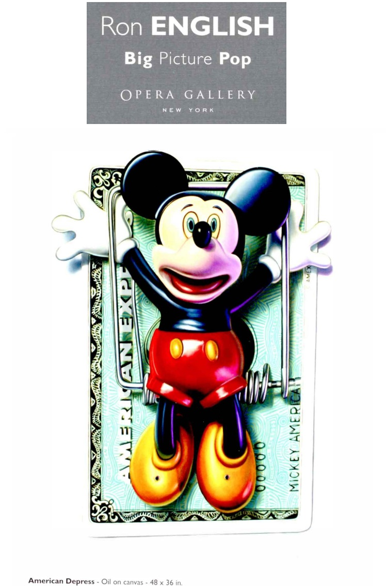
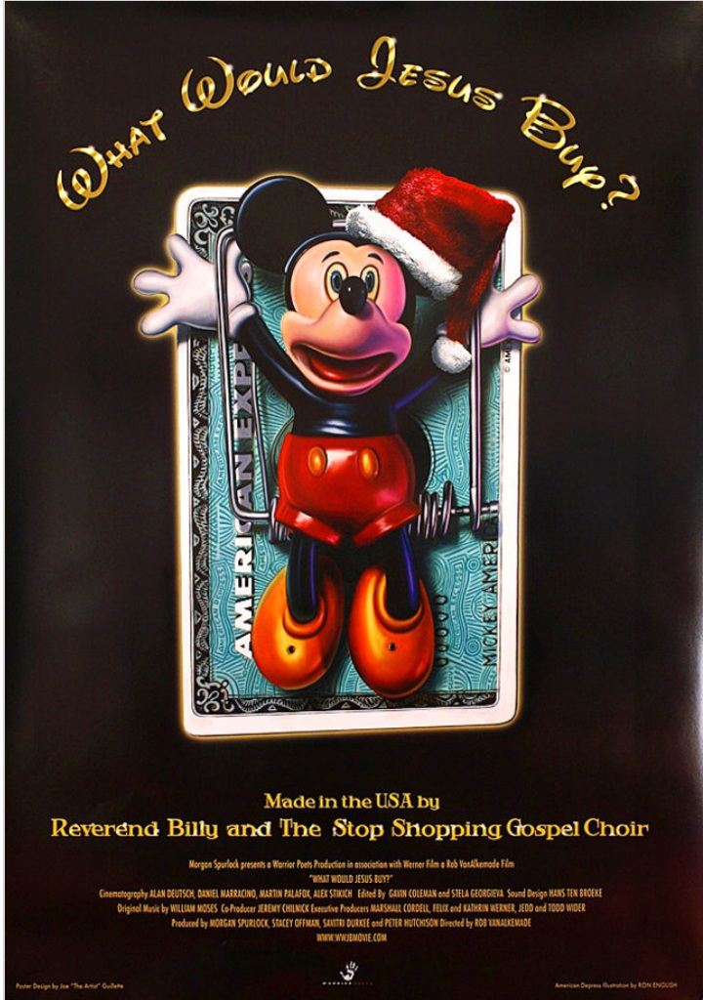

Exhibitions
Big Picture Pop, Opera Gallery, New York, New York, US, November 29–late December 2007.
Literature
Ron English, Abject Expressionism: The Art of Ron English (San Francisco: Last Gasp, 2007), p. 176. ISBN 978-0867196894.
Ron English, Death and the Eternal Forever (London: Korero Press, 2014), p. 134. ISBN 978-0957664920.
Ron English, Status Factory: The Art of Ron English (San Francisco: Last Gasp of San Francisco, 2014), p. 149. ISBN 978-0867197891.
Notes
This work is reproduced in the exhibition catalogue for Big Picture Pop.
This work is also reproduced on the showcard for Status Factory.
A version of this image was used for the poster of the documentary film What Would Jesus Buy? (2007), directed by Rob VanAlkemade and produced by Morgan Spurlock, documented on Posteritati here.
Ancillary Documentation


